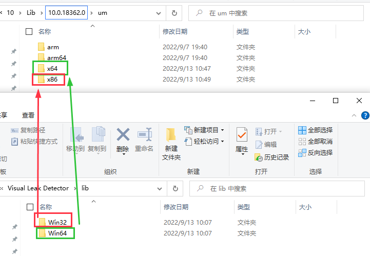
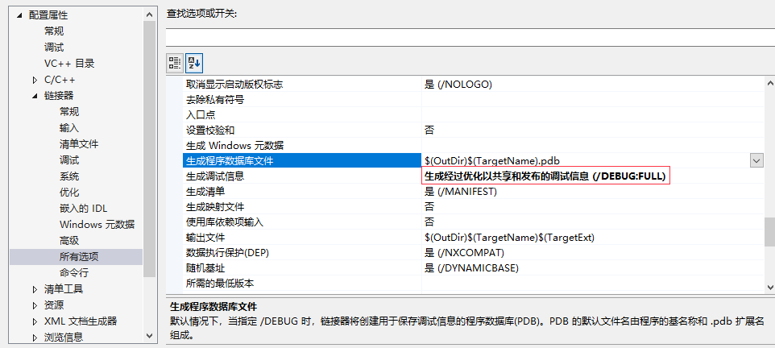

概述：VLD 安装及使用
[toc]
半学半练，定位了一把内存泄漏的问题。主要使用 VLD 这个工具。
VLD 下载安装和使用
1. 下载和安装
[Visual Leak Detector | Enhanced Memory Leak Detection for Visual [【CPP】开发经验|C++
点击上方链接下载和安装 vld 工具，记住安装的位置，后续有很多文件会使用到，需要拷贝移动到相应的文件中。
2. 使用
- 安装完成后，找到安装所在的文件夹
- 找到 visual studio 中 标准头文文件 所在的文件夹，一般会在对应的
windows kits所在的文件夹中找到。如：C:\Program Files (x86)\Windows Kits\10\Include\10.0.18362.0\ucrt。拷贝安装目录下include中的 头文件到该目录，注意有几个kits环境就尽量拷贝几个，万一用到呢 - 找到 vs studio 中 库文件 所在的文件夹，一般会在对应的
windows kits所在的文件夹中找到。如：C:\Program Files (x86)\Windows Kits\10\Lib\(kits 版本号)\um\。拷贝安装目录下lib目录下对应位数的lib文件到kits对应的um\x64或um\x86文件夹中。

到这一步，只要在程序中引入 vld 头文件就可以正常使用了。
#include <vld.h>3. 在 vs2015 以上的版本中使用
安装的时候就可以看到 vld 只支持到 vs2015。所以在 vs 更高的版本中使用时，需要一些额外的操作。
影响：在vs高版本中使用时，虽然能定位泄漏问题，但是不显示文件名和行号。
解决办法：
在 vs 工程设置中按下图设置：

4. release 模式下进行内存泄漏检测
在 Debug 模式下，直接在工程中源文件中任意位置引入 <vld.h> 即可，编译之后的可执行文件就带有泄漏检测的功能。
但是在 Release 模式下则需要做一下额外的处理。
-
同 Debug 版本在 VS 中一样配置好 VLD 的相关信息
-
拷贝 VLD 安装目录下
bin\win32目录下所有的文件和vld.ini到工程目标路径下(可执行文件的目录)。 -
入口处的
cpp文件中，定义强制检测宏和包含vld头文件cpp#define VLD_FORCE_ENABLE #include <vld.h> -
启动和退出时，分别增加以下函数调用
cpp{ ... VLDGlobalEnable(); VLDReportLeaks(); //some code... VLDGlobalDisable(); }
修改配置文件
配置执行环境
在单独运行的环境中，还需要在程序执行目录添加以下
dbghelp.dll
Microsoft.DTfW.DHL.manifest
vld_x86.dll
vld_x86.pdb
vld.ini
# 除此之外还有可能需要
api-ms-win-core-winrt-l1-1-0.dll
增加检测模块
以上配置后，默认情况下只会检测主线程的模块，要想增加其他模块的内存泄漏检测，需要配置
vld.ini配置文件中的ForceIncludeModules配置项。在该配置项后增加需要检测的模块。如：ForceIncludeModules=demo1.dll;demo2.dll
配置输出方式
同样还是配置文件中修改。设置配置文件中 ReportTo 的值即可：
- debugger：控制台
- file: 文件 （默认会输出在运行程序的目录下，也可能会输出在
syswow64这个系统目录下，Win+R 输入syswow64即可打开这个目录。默认文件名：memory_leak_report.txt） - both：控制台和文件
关于
VLD的配置文件：
Vld的库会检查程序所运行的当前目录是否存在vld.ini的配置文件，如果有，则加载里头的配置进行内存检测运行，如果没有取默认的配置参数运行，我们可以手动将vld.ini的文件拷贝到程序的运行目录中即可。关于
vld.ini的几个注意的参数：
VLD = on总开关，是否启用VLD功能，默认为yesMaxDataDump = 256用来显示检测到的内在泄露的块的地址大小，默认256，其实就是显示多少个byte的内容。MaxTraceFrames = 64设置VLD检测到堆栈的最大层极，也就是frame的深度ReportFile = xxx设置VLD生成报告的位置和报告的文件名，默认为：.\memory_leak_report.txt，程序当前运行目录中。ReportTo = debugger设置VLD生成报告的方式，debugger为在控制台输出VLD的报告信息，file在指定目录下生成报告文件，both为即输出也生成报告。如果你的程序为带窗体的程序，需要设置为file或both.
问题1：不显示文件名和行号
缺少 pdb 文件
如果程序运行之后生成的 memory_leak_report 中还是不显示行号，则试试把pdb文件放在程序的运行目录试试。
配置 VS 环境内置引入
主要是修改 props 文件，主要是修改 C:\Users\用户名\AppData\Local\Microsoft\MSBuild\v4.0 下文件，在相应的地方引入 VLD 的头文件目录和库目录